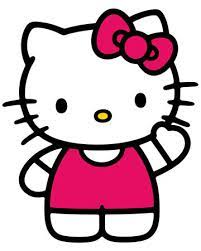

<!DOCTYPE html>
<html lang="es"></html>
<head>
    <meta charset="UTF-8">
    <title>Curriculum</title>
    <link href="style.css" rel="stylesheet">
</head>
<body> 
    
<h1>CURRICULUM     VITAE     DE     HELLO     KITTY</h1>
<div class="espacio"> </div>

<h3>DATOS PERSONALES</h3>
<ul>
    <li><span class="negrita">Nombre completo:</span> Hello Kitty</li>
    <li><span class="negrita">Fecha de nacimiento:</span> 01/11/1974</li>
    <li><span class="negrita">Lugar de nacimiento: </span>Japón</li>
</ul>

<h3>FORMACIÓN ACADÉMICA</h3>
<ul>
    <li><span class="negrita">1974</span> se lanzó en Japón.</li>
    <li><span class="negrita">1976</span> se lanzó en EUA y obtuvo derechos de autor y actualmente es una marca conocida internacionalmente.</li>
    <li><span class="negrita">1999</span> apareció en 12 000 productos anuales diferentes.</li>
    <li><span class="negrita">2000</span> hubo más de 50 000 productos diferentes de la marca Hello Kitty en más de 60 países.</li>
</ul>

<h3>EXPERIENCIA LABORAL</h3>
<ul>
    <li><span class="negrita">1986</span> primera serie animada conocida de Hello Kitty fue la estadounidense (coproducida con Japón) Hello Kitty's furry tale theater.</li>
    <li><span class="negrita">1991</span> serie japonesa de anime Hello Kitty and Friends (Hello Kitty y amigos) se emitió en TV Tokyo en Japón, y en la CBS en los Estados Unidos</li>
    <li><span class="negrita">2005</span> apareció en una nueva serie japonesa de plastilina-animada llamada Hello Kitty's Stump Village</li>
</ul>
</body>

<footer> 
    <div class="pie"> O810 HELLO KITTY  </div>
</footer>